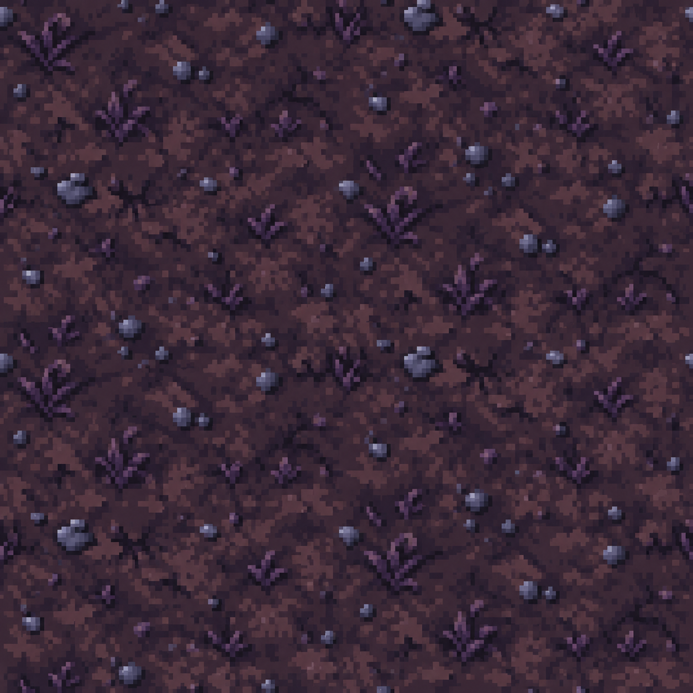
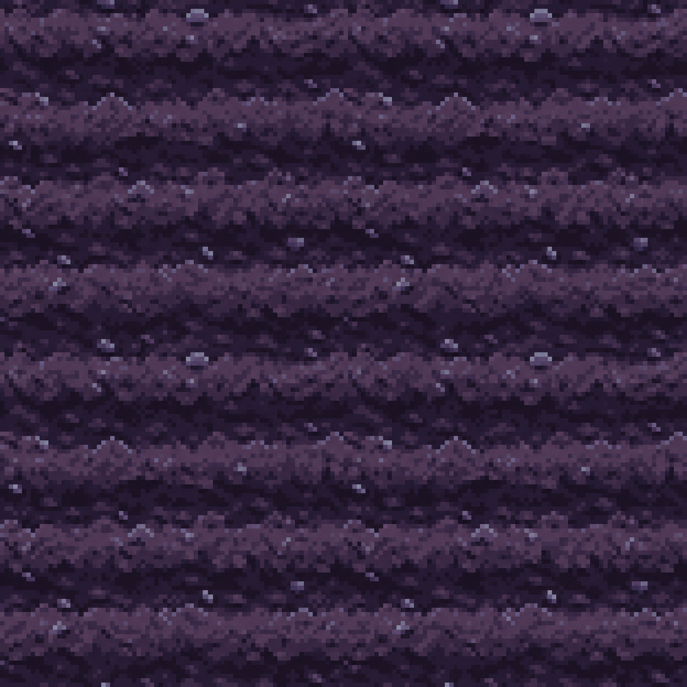
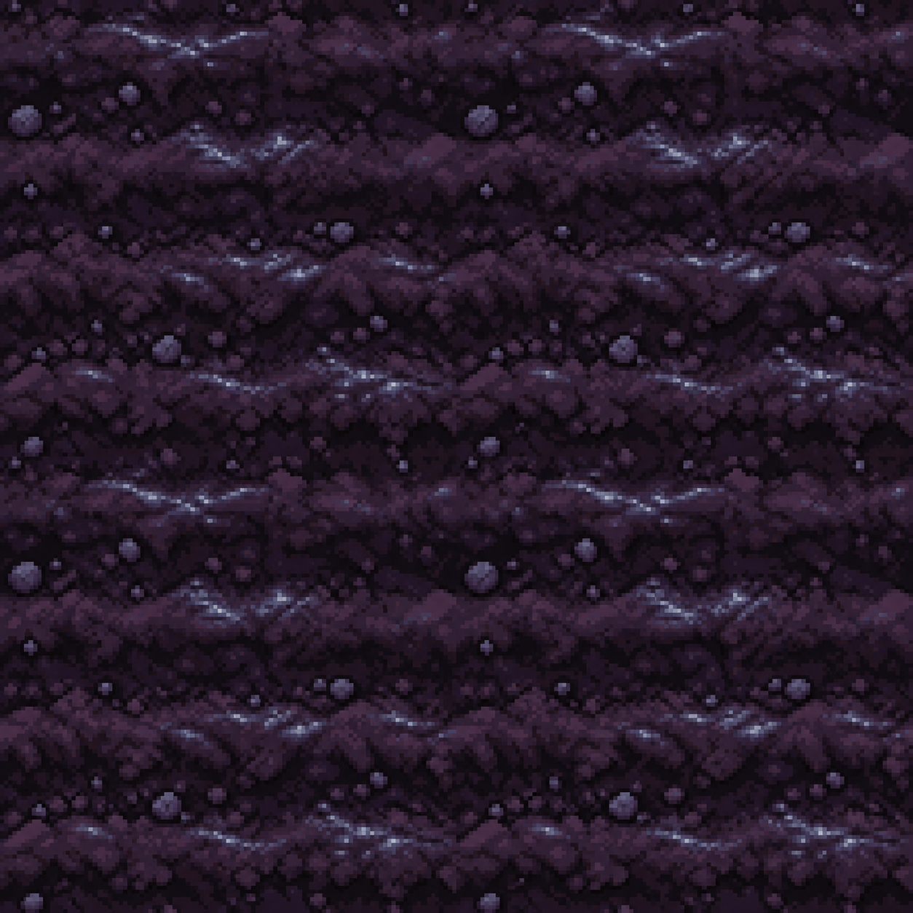
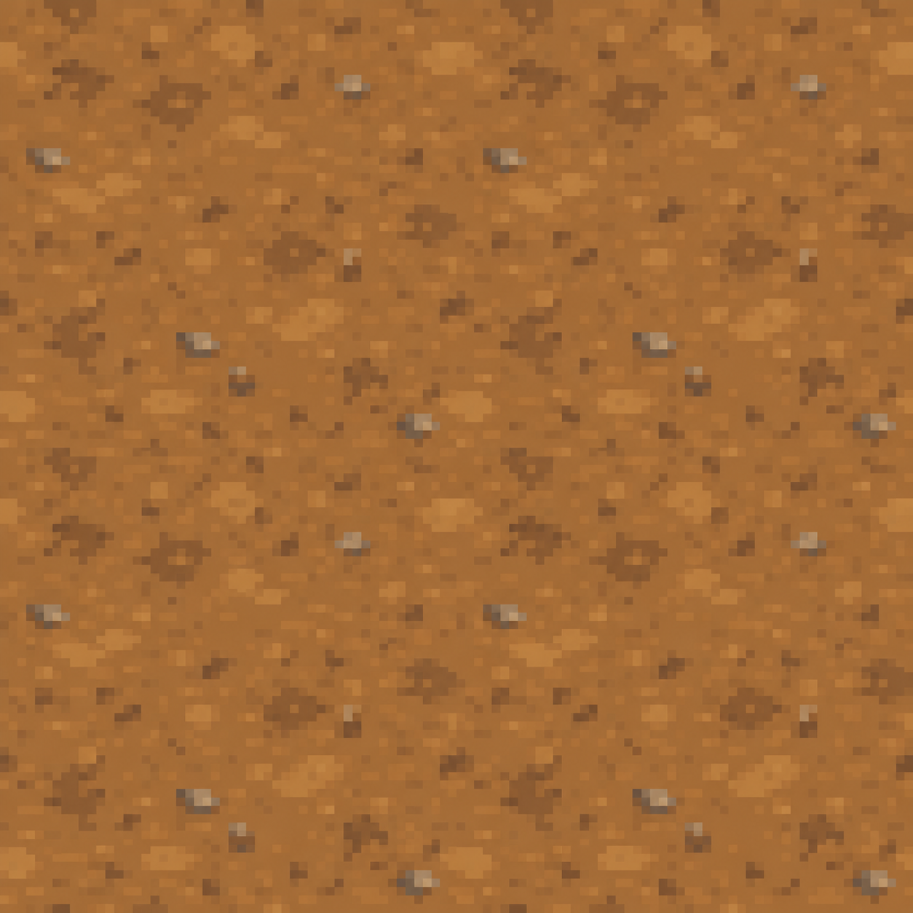
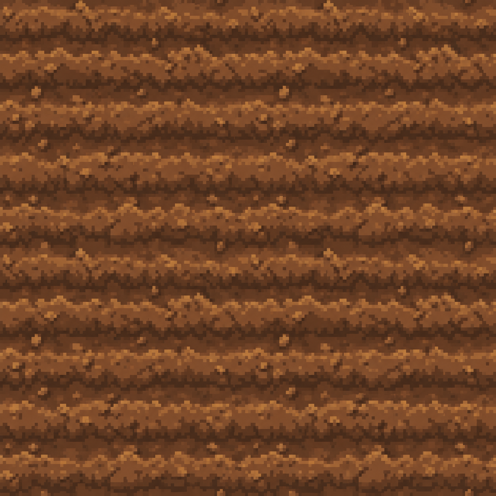
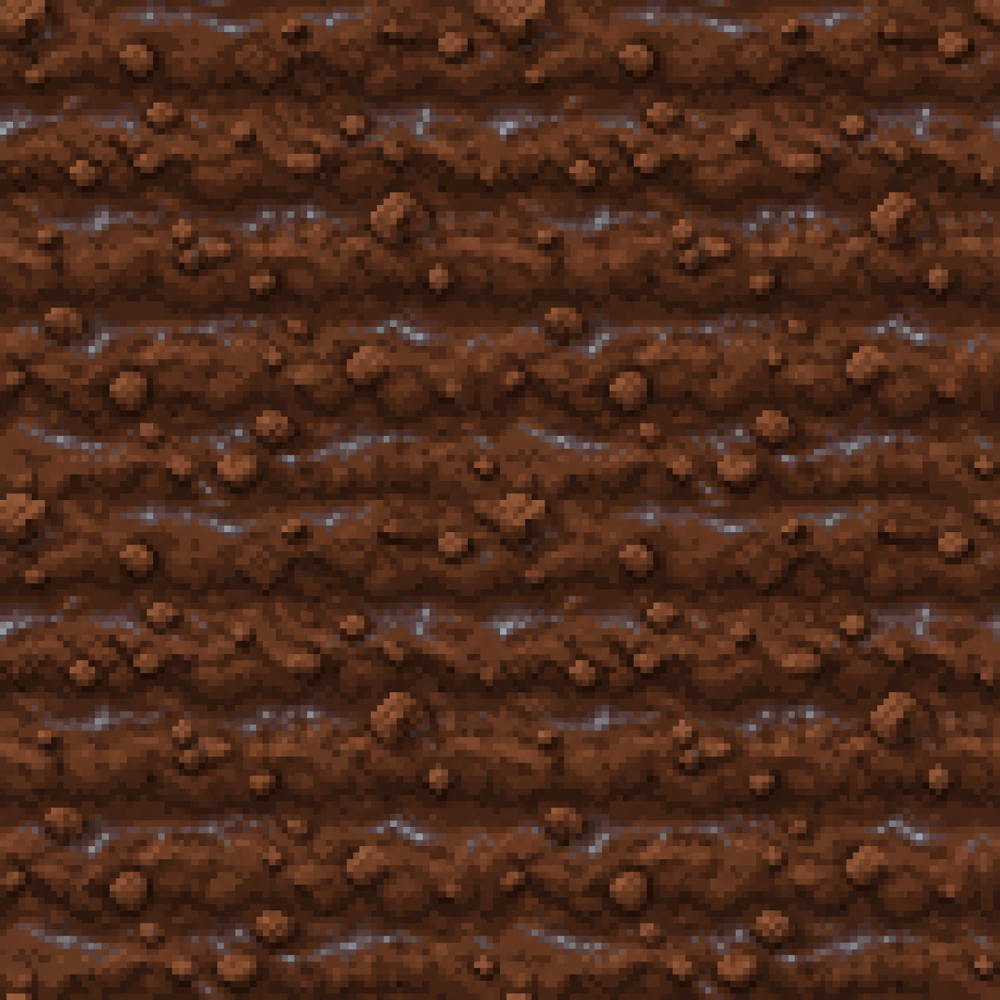

月影花园 · 未耕地
farmable-earthdemon-castle.tile.moon-garden-earth
这六张是待审的高分辨率来源图。批准后才会按各槽位的 32×32 规范进入受控素材流程；当前未修改正式 AssetIndex、游戏包或运行时资源。

demon-castle.tile.moon-garden-earth

demon-castle.tile.moon-garden-tilled

demon-castle.tile.moon-garden-watered

little-valley.tile.farmable-earth

little-valley.tile.tilled-soil

little-valley.tile.watered-soil